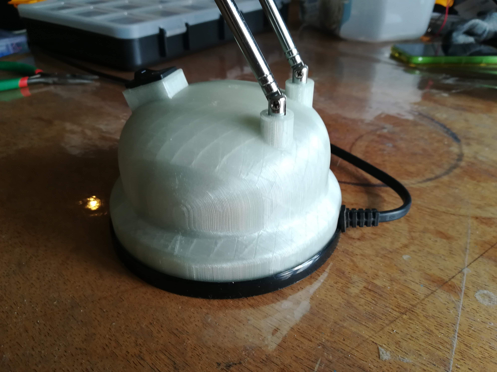
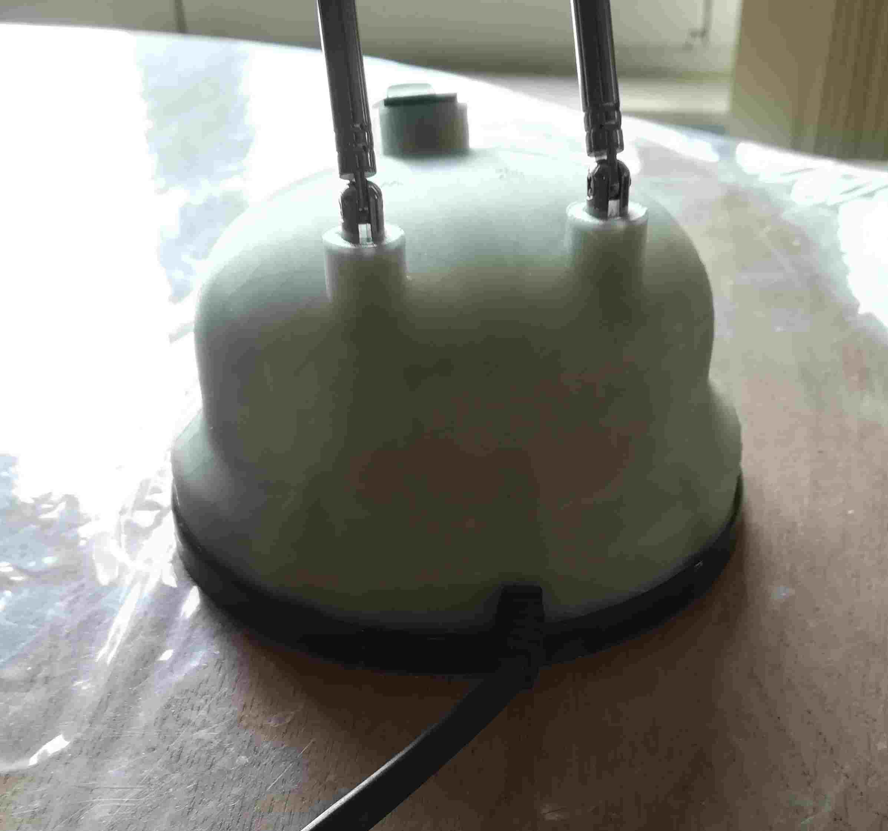

The lamp project is an example of a consumer good where some plastic part broke. Instead of throwing it away, the owner chose to make a unique design and repair the object instead. The part is printed with the green flourecent PLA material, therefore it shows an after glows when tured off. The cost for support removal is quite high because we choose to print the design in an up right position, resulting a large cavity full of support material.
| Service | Time | Weight | Cost |
|---|---|---|---|
| 3d Measurement | 2 h | 32 € | |
| 3d Modeling | 6 h | 96 € | |
| Printing Material | 192 gr | 9,8 € | |
| Printing Time | 32 h | 24, € | |
| Support Removal | 4 h | 64 € | |
| Total Cost | 226,6 € |
It should be pointed out that with some goodwill, the costs for the support material removal can esily be saved. See the homepage for more information on this topic. The part was quite complicated and therefore the working costs (measurment, design and support removal) are quite high. The actual printing costs only amouts to 34,6 €. The unprocesed part is availble to other custumors for reprints at 1,5 times the actual printing cost or 67,5 €. The processed part (support removal) is availeble for the printing cost plus support removal or 98,6 €.

